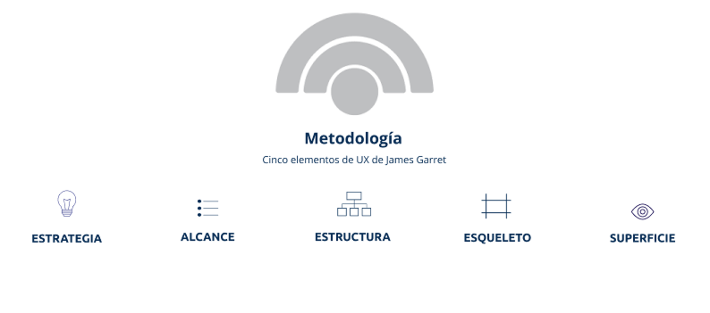
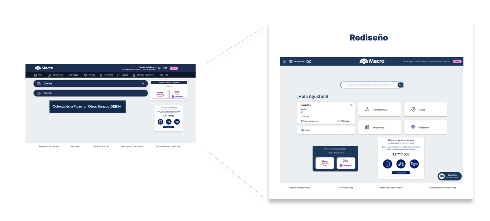
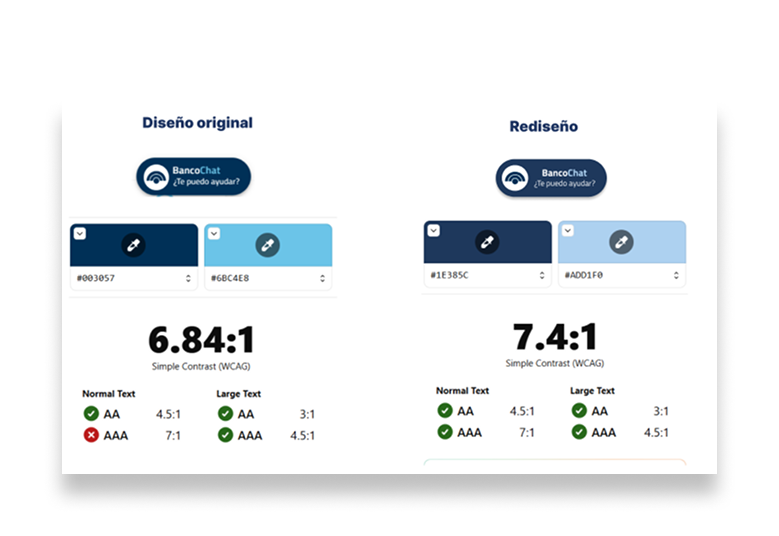
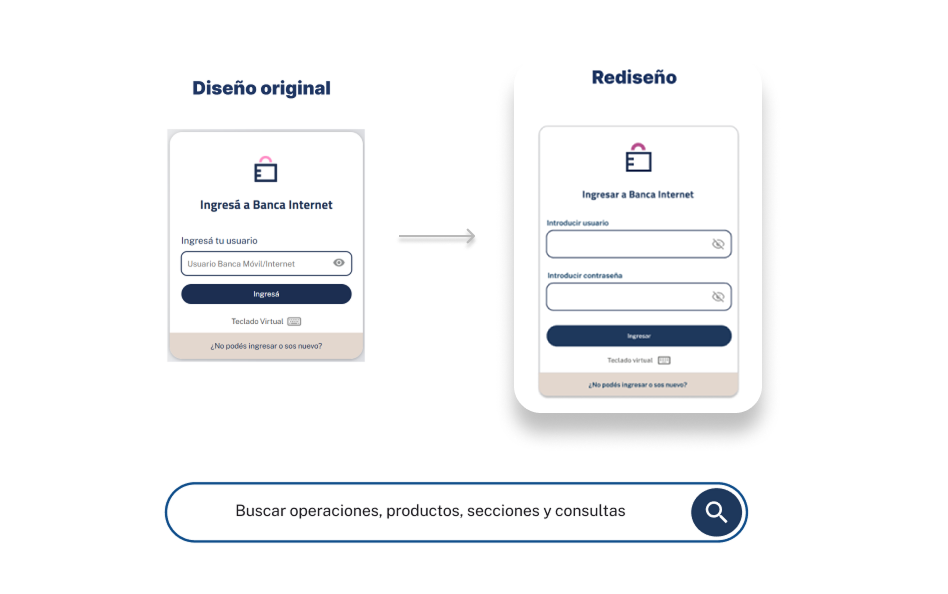
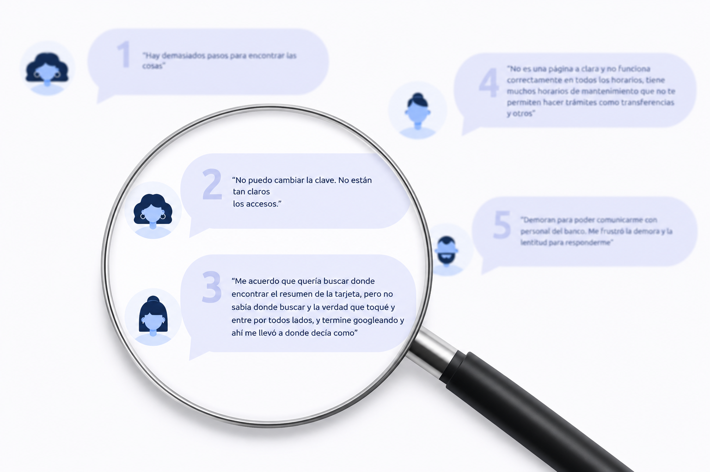

El proyecto se desarrolló siguiendo la metodología de Jesse James Garrett, estructurando el proceso desde la estrategia hasta la superficie para asegurar coherencia entre objetivos, contenido y diseño.
El rediseño del sitio web de Banco Macro se enfoca en mejorar la experiencia de usuario, a partir de insights obtenidos en pruebas de usabilidad y feedback de usuarios.
Se propone una interfaz moderna y minimalista que facilita la navegación y el acceso a la información.


El proyecto se desarrolló siguiendo la metodología de Jesse James Garrett, estructurando el proceso desde la estrategia hasta la superficie para asegurar coherencia entre objetivos, contenido y diseño.

Se optimizó el acceso a ayuda incorporando BancoChat en todas las pantallas, antes disponible solo en el inicio, previa al ingreso.
Además, se mejoró la accesibilidad optimizando el contraste de colores según criterios AAA (WCAG), logrando mayor legibilidad e inclusión para usuarios con distintas capacidades visuales.

Se optimizó el flujo de ingreso al unificar usuario y contraseña en una sola pantalla, simplificando un proceso que antes requería dos pasos. Además, se incorporó un buscador en todas las pantallas, mejorando la agilidad en la navegación y las acciones del usuario.

Las decisiones de rediseño se basaron en insights obtenidos de entrevistas a usuarios, encuestas, tree testing y evaluaciones heurísticas. A partir de estos hallazgos, se optimizaron flujos clave como el cambio de contraseña, la consulta del resumen de tarjeta y la visualización de movimientos, mejorando la claridad y eficiencia de la experiencia.